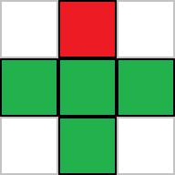

This is a fairly short tutorial on a fire effect, and creating a suitably fiery color palette for it.
This fire effect has seen a lot of use in demos. It's not difficult to code, and creates neat-looking fire.
First you have to create a color palette, typically consisting of 256 colors. With an HSL-to-RGB function, it's easy to create a good palette — select a hue range from red to yellow, keep saturation at 100%, and brightness from 0 to 100% so that more red colors become darker as well. Each index in the palette is an array with three numbers corresponding to red, green, and blue, making them fairly easy to plug into an ImageData object.
To contain the fire, you need a buffer (called "fire" here) with the same size as the screen. This is an array of arrays with every value starting at 0. At the bottom row, give a random value to each index, and keep changing the random values every frame. Each frame, calculate each row of pixels based on the two rows below it: the value of each pixel becomes the sum of the three pixels below it (one directly below it, as well as two adjacent pixels), and the pixel two rows directly below it. Then, divide the sum through a value slightly larger than 4, so the fire dies out as it rises. The larger the value you divide it through, the lower the flames will rise. For example, if you use *16/65, which is roughly the same as dividing by 4.0625, the flames will rise higher than if you use *4/17, which is the same as dividing by 4.25. If you divide it by 4, the fire never dies, and if you divide it by 5, the fire dies way too fast.
This image shows which pixels are included in the calculation: The red pixel is the current pixel, and the four green pixels are the ones used to calculate the value of the current pixel.
Do this from top to bottom. If you do this in the wrong order, some pixels may already be recalculated while other pixels that depend on them are still being calculated. Each new frame may depend only on the values of the previous frame. It's also important to note that the top of the canvas has a y-coordinate of 0, while the bottom has a y-coordinate of (canvas.height - 1).
On the sides of the canvas, the pixels have no neighbors to the left or right. To overcome this, the effect can be made circular, so that the leftmost pixel has the rightmost pixel as a neighbour, and vice versa. To do this, modulo division through the width of the canvas can be used on the x-coordinate of the neighbours.
Since the values for the fire are stored in arrays, we can use ImageData instead of drawing each pixel on the canvas individually, which is much faster, or at the very least, seems to be faster. Each value in the array corresponds to an index on the palette, which can then be plugged into the ImageData's values for a given pixel. Repeat this for every pixel on the canvas, and you have your image.
This code should give you an idea of what that looks like. The comments provide a more detailed explanation.
var canvas = document.createElement("canvas");
canvas.width = 640;
canvas.height = 128;
var ctx = canvas.getContext("2d");
var palette = []; //This array contains the color palette
var fire = []; //This will contain the fire
var buffer = ctx.createImageData(canvas.width, canvas.height); //This is the buffer to be drawn to the screen
//Initialize the fire buffers -- It must be 0 in the beginning.
for (let y = 0; y < buffer.height; y++) {
fire[y] = [];
for (let x = 0; x < buffer.width; x++) {
fire[y][x] = 0;
}
}
//Generate the palette
for (let c = 0; c < 256; c++) {
//hslToRgb is used to generate colors
//Hue goes from red to yellow
//Saturation is always the maximum
//Lightness is 0-255 for c=0-128, and 255 for c=128-255
palette[c] = hslToRgb((c / 3) / 256, 1, Math.min(c * 2, 255) / 256);
}
function draw() {
//Randomize the bottom row of the buffer.
for (let i = 0; i < canvas.width; i++) {
fire[canvas.height - 1][i] = Math.floor(Math.random() * 256);
}
//Do fire calculations for every pixel, from top to bottom
for (let y = 0; y < canvas.height; y++) {
for (let x = 0; x < canvas.width; x++) {
fire[y][x] = ((fire[(y + 1) % canvas.height][(x - 1 + canvas.width) % canvas.width] + fire[(y + 1) % canvas.height][x % canvas.width] + fire[(y + 1) % canvas.height][(x + 1) % canvas.width] + fire[(y + 2) % canvas.height][x % canvas.width]) * 32) / 129;
}
}
//Send data from the fire table to the buffer
for (let y = 0; y < canvas.height; y++) {
for (let x = 0; x < canvas.width; x++) {
let id = (y * canvas.width + x) * 4;
let c = palette[Math.floor(fire[y][x])];
buffer.data[id] = c[0];
buffer.data[id + 1] = c[1];
buffer.data[id + 2] = c[2];
buffer.data[id + 3] = 255;
}
}
//Draw the buffer on the canvas and continue the animation
ctx.putImageData(buffer, 0, 0);
window.requestAnimationFrame(draw);
}
window.requestAnimationFrame(draw);
document.body.appendChild(canvas);As usual, hslToRgb() was taken from this script.
If everything goes well, it should look like this. At the start, everything is black, and the flames rise two pixels each frame until they reach their maximum height. Once they reach that height, they'll continue to animate because the bottom row is randomized every frame.
If you don't randomize the bottom row of the buffer every frame, the flames won't be animated, and once they rise to their maximum height, they stay there forever, to the point where the animation starts to resemble a static image.
This effect can also be applied to things like the borders of text or shapes, but that's a subject for a future revision of this tutorial.